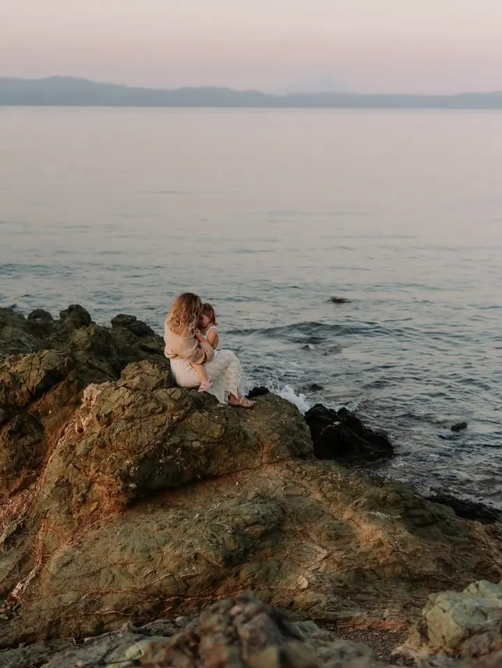
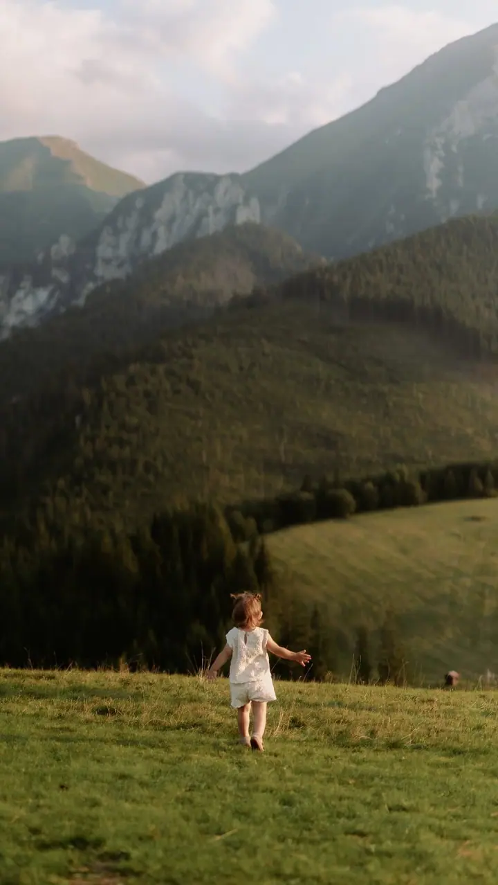
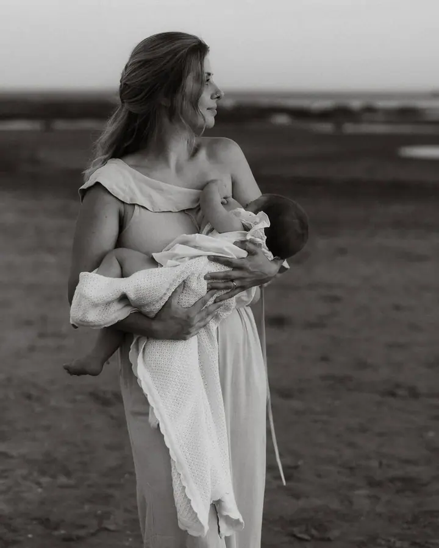

Newborn focení
Klidné focení u vás doma, bez umělého polohování, nejčastěji u rodičů v náručí. Nikdy nespěchám a pauzy děláme podle potřeb miminka.

Jmenuji se Romana Ziaka, ale klidně mi říkejte Romča. Fotím maminky s miminky, rodiny s dětmi i ženy, které si chtějí dopřát chvíli pro sebe. Nemusíte umět pózovat, od t…
Rezervovat termínJsem fotografka z Olomouce, milující manželka a máma malé holčičky, která je obrovskou jiskrou mého života. Dlouhé roky jsem učila a pracovala s dětmi se speciálními vzdělávacími potřebami. Naučily mě dívat se pod povrch a všímat si toho, co není na první pohled vidět.


Za tu dobu, co fotím, jsem zjistila, že nejkrásnější fotky nevznikají proto, že někdo umí pózovat. Vznikají ve chvíli, kdy se cítíte dobře a zapomenete, že se vlastně fotíte. Proto si dávám záležet na atmosféře, umím ji odlehčit a rozesmát i ty, kdo tvrdí, že se neradi fotí. Během focení vám ukazuji fotky a společně doladíme, co se vám líbí.
Mám ráda jemné, tlumené barvy, blízké záběry a detaily, které ukazují spojení mezi vámi. A abyste věděli, s kým máte tu čest: jsem tak trochu nemehlo, dělám hloupé vtipy a jsem děsně pověrčivá. Foťák ale zatím všechno přežil.
Co fotím
Klidné focení u vás doma, bez umělého polohování, nejčastěji u rodičů v náručí. Nikdy nespěchám a pauzy děláme podle potřeb miminka.
V přírodě, v ateliéru nebo u vás doma, klidně i ve výběhu s koňmi. Žádné nucené pózy, vedu vás jemně a zábavně, aby focení bavilo i děti.
Pro každou ženu i maminku, nemusíte být modelka. Fotím citlivě a s respektem k vašim hranicím a pomůžu vám najít pózy, ve kterých vynikne přesně to, co má.
Fotíme venku na některé z mých lokalit, u vás doma nebo v pronajatém ateliéru. Šaty si můžete půjčit z mého klientského šatníku a celým focením vás citlivě provedu.
Postup
Stačí pár slov, klidně jen dotaz. Na zprávy odpovídám do 24 hodin a poptávka je nezávazná.
Vybereme místo, ať už venkovní lokalitu, ateliér, nebo váš domov, a poradím vám s oblečením. Šaty a doplňky si můžete půjčit z mého šatníku.
Celým focením vás přirozeně povedu, nikam nespěcháme a průběžně vám ukazuji fotky. U miminek se řídíme jejich tempem.
Každou fotografii precizně upravuji a dávám si záležet na detailech, aby se vám líbily nejen dnes, ale i za dvacet let.
Otázky
Ideálně ve chvíli, kdy je bříško už hezky vidět, zhruba od 7. měsíce. Nedoporučuji nechávat focení na poslední měsíc, který už bývá nepohodlný.
Přijedu k vám domů, takže odpadá stres z cestování. Miminko fotím přirozeně, bez umělého polohování, a focení trvá zhruba 1 až 3 hodiny podle jeho potřeb.
Vůbec ne. Poradím vám s výběrem a šaty i další kousky si můžete půjčit z mého klientského šatníku. Pro miminka mám pletené oblečky a doplňky.
To slyším často. Celým focením vás povedu, pomůžu najít pózy, které vám sluší, a postarám se o to, abychom se hlavně nasmáli.